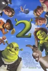

- Шрек 1
-
Огр по имени Шрек живёт в доме, находящемся в болоте. Так как он любит одинокую жизнь без лишнего шума, то он отпугивает людей от своего дома, поэтому считает себя страшным монстром, хотя это далеко не так. Но потом Лорд Фаркуад, правящий на землях Дюлока, специально заманивает к дому Шрека сказочных животных. Шрек идёт выяснять отношения с Фаркуадом.
По пути в Дюлок Шрек встречает говорящего осла, которого хотели продать на рынке магических животных, но потом Осёл привязывается к Шреку и они становятся друзьями. Как оказалось Фаркуад специально позвал Шрека к себе, чтобы его рыцари могли пройти турнир. Шрек легко смог одолеть всех рыцарей и тогда Фаркуад предлагает ему сделку: Шрек может вернуть себе болото, если ему удастся освободить принцессу Фиону из её башни, охраняемой драконом. Фаркуад тайно надеется жениться на принцессе.
Шрек вместо с Ослом идут в замок. На мосте случается прецедент: Ослу боязливо идти по хлипкому мосту, поэтому Шрек намеренно раскачивает его, чтобы Осёл смог пройти дальше. Затем Шрек предлагает такую стратегию, чтобы дракон не проснулся, а они спокойно утащили принцессу. Но дракон просыпается, хотя потом его смогли удержать цепями.
Принцесса Фиона не желает признавать Шрека героем, поскольку он огр. Но спустя некоторое время она изменяет мнение о нём. Они влюбились в друг друга, но Шрек услышал разговор Фионы и Осла, что никто не влюбится в урода, она имела в виду себя, поскольку каждую ночь превращалась в огра. Но Шрек подумал о себе и отдал её Фаркуаду, а затем ушёл.
Несчастная Фиона решает выйти замуж за Фаркуада. После того, как осел Шрек объяснил недоразумение, они предотвращают с помощью дракона свадьбу. Фаркуад, который хочет казнить Шрека и запереть Фиону обратно в башню, пожирается драконом. Последующий поцелуй настоящей любви между Фионой и Шреком сводит на нет проклятие, которое лежит на Фионе. Наконец она принимает форму женщины-огра и выходит замуж за Шрека.
- Шрек 2 
-
Принц Чаминг спешит к замку дракона, чтобы спасти принцессу Фиону. Однако по прибытии он обнаруживает, что отсутствует и дракон, и принцесса. Ведь её уже спас Шрек.
Тем временем Шрек и принцесса Фиона отлично проводят медовый месяц и возвращаются в свой дом на болоте, где обнаруживают приглашение от родителей Фионы: король и королева устраивают бал, чтобы отпраздновать свадьбу их дочери. Несмотря на протесты Шрека, Фиона убеждает его поехать в Тридевятое королевство; вместе с ними отправляется Осёл, который поругался с Драконихой и хочет развеяться. По прибытии их встречают король Гарольд и королева Лилиан, которых — в частности Гарольда — потрясает тот факт, что Фиона не только осталась огром, но и вышла замуж за одного из них. За ужином Шрек и Гарольд ссорятся, чем огорчают Фиону, и та запирается в своей комнате. Шрек начинает сомневаться, что он достоин Фионы, особенно после прочтения её детского дневника, в котором та неоднократно говорила о себе как о невесте принца Чаминга.
К Гарольду тайно прилетает Фея-крёстная и напоминает о старом долге: когда-то она оказала Гарольду некую услугу, за что он обещал поженить их детей — Фиону и принца Чаминга. Она приказывает королю избавиться от Шрека, в противном случае угрожает отнять у него «долгую и счастливую жизнь». Гарольд начинает действовать и по наводке нанимает всем известного убийцу огров Кота в сапогах.
Однако Коту не удается убить Шрека и в силу обстоятельств он раскрывает ему личность заказчика, а затем и вовсе присоединяется к огру и Ослу. Шрек, Осёл и Кот пробираются на фабрику Феи-крёстной и крадут зелье «Долго и счастливо», которое, по мнению Шрека, сделает его «прекрасным принцем» для Фионы. Он и Осёл выпивают зелье, однако не замечают каких-либо изменений и внезапно засыпают. В это время Фиона приходит к выводу, что их поездка была ошибкой, и собирается отправиться на поиски Шрека, чтобы вернуться домой, но затем и она проваливается в сон.
Проснувшись на следующее утро в разных местах, Шрек и Фиона обнаруживают, что стали людьми, в то время как Осёл превратился в прекрасного белого коня. Узнав, что действие зелья закончится в полночь, если он не поцелует Фиону, Шрек спешит в замок вместе с Ослом и Котом. Тем временем обнаружившая пропажу зелья из своих запасов Фея-крёстная решает воспользоваться ситуацией: поскольку Фиона не знает, как выглядит Шрек в человеческом облике, принц Чаминг притворяется ставшим человеком Шреком и пытается завоевать расположение Фионы, чтобы получить от неё поцелуй. Подоспевшему Шреку Фея-крёстная показывает, как мило смотрится Фиона в облике красавицы-принцессы рядом с Чамингом и убеждает, что лучший способ осчастливить Фиону — отпустить её. Огр покидает замок.
Из-за скептического отношения Фионы к Чамингу, который по поведению совсем не похож на прямодушного и остроумного Шерка, Фея-крёстная поручает Гарольду подмешать в её напиток любовное зелье. Этот разговор подслушивают Шрек, Осёл и Кот. Они понимают, что Фиона вовсе не счастлива с молодым красавцем и решают вернуться. Но их арестовывают рыцари королевства и заключают в темницу. Когда начинается королевский бал, в темницу к героям проникают увидевшие их арест по телевизору сказочные существа, с которыми Шрек и Осёл познакомились во время их предыдущего приключения, и освобождают их. Все вместе они штурмуют тюрьму верхом на гигантском пряничном человечке, созданном другом Пряни по имени Кекс. Все вместе устремляются во дворец.
Шрек боится, что после любовного зелья ничто не помешает Фионе поцеловать Чаминга, однако вместо того, чтобы влюбиться в него, Фиона нокаутирует принца ударом головой. Гарольд признается, что в последний момент поменял местами их с Фионой чашки, потому что желает своей дочери истиной любви, а не из зелья. В ярости Фея-крёстная атакует Шрека заклинанием из волшебной палочки, однако Гарольд заслоняет его своим телом; заклинание рикошетит от его доспехов обратно к Фее, после чего та распадается на пузыри.
После исчезновения Феи Гарольд превращается в короля-лягушонка; он сознаётся, что много лет назад тоже выпил зелье «Долго и счастливо», чтобы завоевать Лилиан, которую страстно полюбил. Король благословляет брак Шрека и Фионы, а Лилиан заявляет, что любит Гарольда даже в облике лягушки. Когда часы бьют полночь, Фиона отказывается от предложения Шрека остаться людьми, после чего они вновь становятся ограми; к своему сожалению Осёл также перестаёт быть белым скакуном, хотя Шрек уверил его, что для него всегда был и останется благородным жеребцом до самого конца. В сцене после титров прилетает жена Осла Дракониха, которая родила от него нескольких детей, представляющих собой гибриды осла и дракона. Осёл счастлив в окружении своего семейства.
- Шрек Третий
-
После смерти крёстной Феи, у её сына, принца Чарминга жизнь пошла по наклонной: он вынужден зарабатывать на жизнь, выступая в тавернах, но все его выступления заканчиваются неудачами и постоянными насмешками со стороны зрителей. После одного из таких выступлений Чарминг решает изменить свою жизнь и клянётся, что станет королём Тридевятого королевства и отомстит за смерть своей матери. Между тем, король Гарольд-лягушка умирает, и его зять — огр Шрек — и дочь Фиона должны сменить его. Шрек пытался быть регентом во время болезни короля, но у него ничего не получилось, и он настаивает на том, что из него не выйдет настоящий король, а чтобы править королевством, надо найти кого-то ещё. Перед смертью Гарольд рассказывает Шреку о другом наследнике: племяннике Артуре «Арти» Пендрагоне. В итоге Шрек, Осёл и Кот в сапогах решаются привезти Арти на царство.
Чарминг тем временем отправляется в таверну «Ядовитое яблочко» и убеждает сказочных злодеев бороться за своё «долго и счастливо», апеллируя к поражениям, приведённых в их рассказах. Перед отплытием из Тридевятого королевства Шрек узнаёт от Фионы, что скоро станет отцом, что приводит его в ужас, так как он боится, что не способен воспитывать детей.
Троица героев прибывает в Вустерширскую Академию, элитную магическую школу-интернат, где обнаруживает, что Артур — тощий 16-летний неудачник, которого все задирают. Шрек сообщает «лузеру» потрясающую новость и увозит его с собой. По дороге Арти волнуется, вдобавок Осёл и Кот непреднамеренно пугают его, обсуждая обязанности короля. В результате Арти, испугавшись, что он не сможет справиться с этими обязанностями, пытается захватить управление кораблём, чтобы вернуться в Вустершир, и когда он и Шрек сражаются за штурвал, тот ломается, что приводит к крушению корабля на отдалённом острове, где герои встречаются с бывшим учителем Арти, чудаковатым волшебником Мерлином.
В это время Чарминг и другие злодеи атакуют замок, но Волк, Пиноккио, Пряня, Три поросёнка и три слепые мыши задерживают их достаточно долго, чтобы Фиона и её мать, королева Лиллиан, убежали по потайному ходу вместе с Белоснежкой, Рапунцель, Золушкой, Спящей красавицей и Дорис, уродливой сводной сестрой Золушки. Один из поросят, не выдержав психологического давления, случайно выдаёт, что Шрек отправился за Артуром, и Чарминг отправляет капитана Крюка и его пиратов выследить Шрека. Сказочных принцесс, Фиону и Лиллиан ловят и сажают в башню из-за предательства Рапунцель, влюблённой в Чарминга.
Капитан Крюк и пираты выслеживают Шрека и его друзей на острове Мерлина, где они пытаются захватить Шрека живым и убить других. Шрек и Арти побеждают злодеев, а Крюк упоминает о Чарминге и захвате Тридевятого королевства. Заботясь о своей жене и будущем ребёнке, Шрек призывает Арти вернуться в Вустершир. Вместо этого Арти уговаривает Мерлина использовать его магию, чтобы отправить их в Тридевятое королевство. Заклинание срабатывает, но Кот и Осёл поменялись телами. Они находят Пиноккио и узнают, что Чарминг планирует убить Шрека не просто так, а в рамках пьесы. Люди Чарминга прибывают, но Арти обманывает рыцарей, чтобы их не взяли под стражу, и они врываются в замок во время репетиции пьесы. Оказавшись в гримёрке Чарминга, четвёрка попадает в плен.
Чарминг готовится убить Арти, полагая, что он — следующий король. Чтобы спасти жизнь юноши, Шрек признаётся Чармингу, что Арти был пешкой, чтобы занять его место в качестве короля. Чарминг верит Шреку и позволяет обозлённому Арти уйти. Осёл и Кот заключены в тюрьму с Фионой и принцессами. Узники спорят между собой относительно того, как им всем сбежать из тюрьмы. Но королева Лиллиан решает проблему, мастерски пробив головой дыры в каменных стенах тюрьмы. В то время как принцессы запускают спасательную операцию для Шрека, Осёл и Кот освобождают Пряню, Пиноккио, Волка и поросят, а также детей Драконихи и Осла. Они встречают Арти, который всё ещё зол, но Кот и Осёл смягчают его, объясняя, что Шрек солгал Чармингу ради того, чтобы тот оставил Арти в живых.
С наступлением темноты Чарминг ставит мюзикл. Когда он собирается убить Шрека, Фиона вместе с Котом, Ослом, принцессами и сказочными персонажами врываются на сцену и срывают представление. Следом за ними появляется Арти и сообщает злодеям главную истину: то, что все их рассматривают как проигравших, вовсе не означает, что они должны быть такими. Тронутые речью Арти, злодеи решают пересмотреть свои жизненные принципы и стать добрее. Разъярённый Чарминг отказывается прислушаться к словам юноши и бросается на Арти с мечом, но Шрек преграждает ему путь, и Чарминг наносит ему удар. Сымитировавший ранение Шрек сообщает Чармингу, что ему нужно работать над своим прицелом, после чего отталкивает Чарминга в сторону, и Дракониха намеренно сбивает хвостом декорацию-башню, которая падает на принца, мгновенно убивая его. Сама же Рапунцель успевает сбежать из башни, предварительно потеряв свои волосы (которые были фальшивыми).
Арти возлагает на себя корону и занимает трон. В то время как королевство празднует восход нового правителя, Кот и Осёл находят среди зрителей Мерлина, который возвращает им их исходные тела, на сей раз случайно перепутав хвосты. Шрек и Фиона наконец-то возвращаются на болото, став счастливыми родителями тройняшек Фаркла, Фергуса и Фелиции, которых воспитывают с помощью Кота, Лиллиан, Осла и Драконихи.
- Шрек Навсегда
-
Во флешбэке[b], родители принцессы Фионы отправляются к ведьмам и их предводителю Румпельштильцхену. Так как им надоело ждать подходящего момента, когда Фиона будет освобождена, они просят его освободить Фиону от чар. В обмен на исчезновение всех проблем, Румпельштильцхен требует переписать на него Тридевятое королевство. Родители готовы на всё ради спасения дочери, поэтому им приходиться согласиться. Вдруг один из слуг Лиллиан и Гарольда сообщает им, что она освобождена, чем срывает планы злодею. Румпельштильцхен оказывается нищим попрошайкой и теперь решительно настроен избавиться от Шрека, испортившего ему жизнь.
Шрек становится знаменитостью[c] — около его болота проходят экскурсии, а крестьяне становятся в очереди, чтобы взять автограф. Но это не радует Шрека. Доведённый до тихого отчаяния, Шрек в приступе гнева на вечеринке в честь дня рождения своих детей ссорится с Фионой.
Подслушавший их разговор Румпельштильцхен подстраивает знакомство со Шреком и предлагает ему контракт: Шрек отдаёт ему день из своей прошлой свободной жизни, а взамен может получить день, в котором сможет отдохнуть как настоящий огр. Румпельштильцхен обещает ему, что когда этот день закончится, Шрек «будет чувствовать себя совсем другим огром», и забирает один день из его детства, когда он родился, «который он даже вспомнить не в состоянии».
Подписав контракт, Шрек оказывается в альтернативной реальности, в которой развлекается от души, пугая людей. Однако затем он направляется к своему дому и узнает, что болото высушено. Неожиданно на Шрека нападают ведьмы и усыпляют его. Шрек просыпается в клетке-карете, запряжённой Ослом, который его не узнает. Шрек попадает в плен к Румпельштильцхену, ставшему королём, и тот разъясняет, что забрал день его рождения, нарушив хронологию и вычеркнув Шрека из истории. В новом времени Гарольд и Лиллиан подписывают контракт Румпельштильцхена и исчезают, переписав Тридевятое королевство на него. Поскольку Шрека нет в данной линии времени, то его никто не знает. Фиона сама спасается из замка Драконихи и примыкает к сопротивлению против Штильцхена, оставив Кота в сапогах в качестве питомца. Тем самым, дети Шрека не рождаются, сказочные существа оказываются под диктатурой Румпельштильцхена, а Дракониха находится у него для уничтожения врагов. Он уточняет, что по условиям контракта, Шрек никогда не существовал, и в данной линии времени у него есть один день, после чего огр исчезнет навсегда.
Шрек сбегает, забрав Осла. Не без труда завоевав его дружбу, Шрек узнаёт от него, как расторгнуть контракт: он должен успеть поцеловать свою истинную любовь. Шрек ищет Фиону и наконец встречается с ней — предводительницей племени огров, ведущих партизанскую войну против Румпельштильцхена. Фиона мечтает о свержении Румпельштильцхена и свободе. Её проклятие осталось при ней, хотя среди огров проклятием считается её дневной человеческий облик. Фиона поначалу отвергает попытки ухаживания Шрека, но постепенно проникается к нему доверием.
Однако в ночь решающего боя огров берёт в плен Гамельнский крысолов, нанятый Румпельштильцхеном. Шреку и Фионе удаётся бежать — при поддержке Осла и Кота в сапогах. Фиона отправляется на освобождение огров. Шреку удаётся добиться поцелуя Фионы, но поскольку она не любит его, ничего не происходит. Шрек с ужасом понимает, что собственными руками уничтожил свою идеальную жизнь. Румпельштильцхен опасается расторжения договора поцелуем Шрека с Фионой и обещает исполнить любое желание того, кто приведёт Шрека. Шрек жертвуя собой приходит и требует освободить всех огров. Румпельштильцхен выполняет его требования и освобождает всех огров за исключением Фионы, так как она не является огром на самом деле.
На свободе Осёл, Кот и огры организуют план спасения Шрека и Фионы — они незаметно проникают во дворец Румпельштильцхена в его новом диско-шаре, который использовали Шрек и Осел для побега. После этого происходит грандиозное сражение с участием Драконихи, которой Румпель хотел скормить Шрека и Фиону, а также освобождённых огров против ведьм, которое приводит к поражению Румпельштильцхена. Но день Шрека практически подходит к концу, и он начинает постепенно исчезать. Он рассказывает Фионе об их семье и детях, показывая ей куклу их дочери. Фиона понимает, что любит Шрека, и целует его до того, как он исчезает. Поцелуй любви уничтожает мир без Шрека и возвращает всё на свои места. Шрек возвращается на вечеринку в тот момент, когда должна была начаться ссора, и понимает, насколько ему дорого то, что он имеет.
На DVD финал мультфильма был продлён: В перезагруженной вселенной огры прибывают на праздник к Шреку, а Румпельштильцхен оказывается в клетке и танцует под флейту Крысолова, а Фиона своим пением заставляет его питомца, гусыню Фифи, взорваться. После этого все огры и сказочные создания купаются в грязи.
- Кот в сапогах
-
Кот в сапогах прибывает в неизвестный город, постоянно скрываясь от правосудия, которое ждёт его в родном городе Сан-Рикардо, где за него назначена награда. Кот приходит в бар выпить молочка, где терпит насмешки и колкости бандитов, но те успокаиваются, когда он даёт им понять, что не так прост. Испуганные люди начинают предлагать Коту места, где бы он мог украсть хорошенькую сумму — например, церковь или приют для детей. Но Кот никогда не грабит церкви и сирот, поэтому больше всего его заинтересовало предложение украсть волшебные бобы у супругов-бандитов Джека и Джилл — ведь если посадить эти бобы, то стебель из них вырастет до неба, где грозный великан охраняет величайшее сокровище — золотоносную гусыню. Кот полжизни искал эти бобы, и поначалу решил, что над ним просто подшучивают, но потом всё-таки соглашается их выкрасть.
Кот очень быстро находит остановившихся в отеле Джека и Джилл. Бобы находятся у Джека в руке, а на руке висит что-то вроде ящика на замке, ключ от которого тот проглотил. Но попытка украсть бобы оборачивается провалом: герою неожиданно помешал таинственный чёрный кот в маске, который охотился за теми же бобами. Коты переругались, и их заметили и прогнали. Кот не терпит позора, поэтому отправляется в погоню за оппонентом. Тот приводит Кота в подземный кошачий бар на «Танцевальную битву», где они танцуют под наблюдением десятков котов и кошек. После танца начинается битва на мечах, в которой Кот ударил противника гитарой по голове. После этого выясняется, что на самом деле кот в маске — это кошка. Но на этом сюрпризы для Кота не заканчиваются. Тут же он встречается со своим другом детства Шалтаем Александром Болтаем, который пытается предложить ему партнёрство, на что тот отвечает отказом. Тогда кошка, которую Шалтай-Болтай представил Кисой Мягколапкой, решает сама уговорить Кота. Не понимая, почему он не хочет работать с Шалтаем, она пытается узнать у него причину этого раздора, взяв его «на нежный мяу». Кот решает рассказать ей свою историю…
Когда он был маленьким котёнком, сильный ветер принес его корзинку к дому в Сан-Рикардо, где жили сироты. Воспитательница приюта, женщина по имени Имельда, стала ему родной матерью. В детском доме рыжий котёнок познакомился с Шалтаем-Болтаем и даже успел спасти его от внука Синей Бороды и его сторонников. Шалтай называет котёнка просто «Кот» (в оригинале — Puss) и рассказывает ему о своей мечте: найти волшебные бобы и собрать золотые яйца, что несёт золотоносная гусыня. Они становятся побратимами и всё детство тратят на то, чтобы найти бобы, для чего организовывают так называемый «Бобовый клуб» и начинают таскать с рынка бобы разных сортов (но волшебных среди них нет). Помимо этого, они просто воруют и часто попадаются. Но после того, как Кот спасает от разъярённого быка маму Команданте (главного стражника), он становится героем города, и Имельда дарит сыну шляпу и сапоги. Но Шалтай, неоднократно попадавший за решётку за кражи, не пожелал изменяться. Позавидовав славе Кота, он обманом приводит последнего в банк (объяснив это тем, что ему якобы нужно откупиться деньгами от банды внука Синей Бороды) и ворует деньги, чем подставляет Кота. Не успев опомниться, тот случайно царапает прибежавшего вместе со стражей Команданте, и им с Шалтаем приходится убегать от стражников. Проезжая на телеге мимо сиротского приюта, Кот видит разочарование в глазах Имельды. Когда они вместе с Шалтаем-Болтаем проезжали мост, их телега перевернулась и вместе с деньгами упала в реку. Кот, не выдержавший такого скверного поступка, отказывается помочь бывшему другу подняться на ноги и спрыгивает с моста, а Шалтая хватают и бросают в тюрьму. С тех пор за Кота назначена награда. Объявления, указывающие на это, развешаны по всему городу и частично за его пределами.
В настоящем, Шалтай-Болтай пытается доказать Коту, что раскаивается, и просит прощения. Кот всё же решает дать Шалтаю шанс и соглашается на партнёрство ради своей чести. По плану Шалтая они нагоняют Джека и Джилл, которые направляются к месту, где нужно посадить бобы. Приехав к месту назначения, герои сажают бобы и по выросшему стеблю поднимаются наверх, где некоторое время резвятся на облаках, разговаривая писклявым голосом из-за разреженного воздуха. Поднявшись в замок, они пытаются найти золотые яйца, не попавшись на глаза стражу золотоносной Гусыни. Поняв, что много яиц им с собой не унести, герои крадут саму Гусыню, оказавшуюся жёлтеньким пушистым гусёнком — ведь тащить множество тяжёлых золотых яиц неудобно, а увести их источник проще — и убегают прочь из башни великана. Они срубают бобовый стебель и успевают спастись. Вечером они делают привал, разводят костёр и торжествуют вовсю, планируя завтра вместе с Гусыней добраться до Сан-Рикардо, чтобы сполна уплатить все долги. Кот пытается намекнуть Мягколапке на чувства, а Киса Коту — на опасность, однако Шалтай-Болтай мешает обоим. Ночью Кота оглушают Джек и Джилл, шедшие по следу героев. А утром рыжий по следам отправляется в погоню, за «друзьями» и украденной Гусыней. Следы приводят его в родной Сан-Рикардо. На одной из городских улиц он находит Шалтая, Джека, Джилл и бандитов, отмечающих победу с бутылкой шампанского, и приходит в недоумение.
Страшное разочарование… Кот понимает, что Шалтай-Болтай устроил всё это ради мести, ведь он был недоволен предательством друга, когда в ту ночь на мосту тот спрыгнул с моста и сбежал прочь, а его (Шалтая) сдал в руки стражников. Джек, Джилл, бандиты в баре и даже Киса работали на него. В тот же миг на улицу по зову Шалтая прибегают стражники, готовые арестовать Кота за ограбление банка (которого он, естественно, не совершал). Появившаяся Имельда просит своего сына признаться в преступлении, а не убегать. Чтобы не расстраивать её, Кот добровольно даёт себя арестовать, и его сажают в тюрьму. Но в камере он сидит не один. Некий старичок по прозвищу Энди «Джек» Бобовый Стебель, прежний обладатель волшебных бобов, посаженный в тюрьму на десять лет за покупку краденой коровы (он выменял эту корову на бобы), рассказывает Коту, что Сан-Рикардо скоро будет разрушен, так как страж Гусыни — это её мама, и она уже летит за своей малышкой. Кот с трудом сбегает из тюрьмы, и в этом ему помогает Мягколапка, которая решила, что Кот для неё дороже, чем деньги.
Встретив Шалтая-Болтая на колокольне, Кот пытается уговорить его отдать Гусыню матери, попутно прося прощения за причинённую боль и намекая, что местью своему лучшему другу проблему не решить. Шалтай после недолгих препирательств соглашается, берёт виновницу переполоха и бежит с ней к мосту, который ведёт из города, а Кот старается привести следом исполинскую белую гусыню. Джек и Джилл пытаются им помешать, но Гусыня-мать раздавливает парочку вместе с их повозкой (в конце фильма они появляются на больничных койках и в гипсе). Кот, Шалтай и Гусыня добираются до моста, но мост под ними рушится. Взрослую Гусыню придавливает остатками моста, а Кот держит на разных верёвках Шалтая и Гусыню. Шалтай просит Кота спасать город, а не его, и отпускает верёвку. Кот спасает Гусыню и отдает её матери. Взглянув на место падения Шалтая, Кот видит лишь скорлупки и золотое яйцо, которое мама-Гусыня забирает с собой. Они с малышкой летят домой.
Кот снова становится героем города и возвращает свою репутацию в глазах Имельды. Вместе с Кисой они убегают от стражников; убежав, Кот говорит Мягколапке: «Мы ещё встретимся!», на что она отвечает: «Раньше, чем ты думаешь», показывая, что она взяла сапоги, и Кот опять погнался за нею. В титрах парочка находит убежище Кисы (кошачий бар), где они провели свой первый «Танцевальный поединок». Они танцуют ещё раз тот же танец, и в конце этого танца Кот целует Мягколапку (она скрывает их лица перед этим). Также выясняется, что Шалтай-Болтай не разбился, а улетел с Гусыней, переодевшись в золотой комбинезон.
- Шрек: Хеллоуин
-
В Хэллоуин друзья Шрека пытаются напугать его, но у них это не получается, после чего Шрек с друзьями решают устроить состязание на самую страшную хэллоуинскую историю. При этом каждый из них хочет доказать, что он самый храбрый. Но прежде чем выяснить, кто же победил, им придётся всю ночь пробыть в заброшенном городке Дюлок, в замке умершего лорда Фаркуада.
Невеста Пряни[к 1] Начинает Пряня — он рассказывает страшную историю о своей жене, которую испёк для него Кекс (пекарь, который сделал Пряню), но по просьбе самого Пряни добавил туда слишком много сахара, из-за чего она стала везде ходить за ним и не давать покоя. Пряня пытается бежать, но жена его догоняет. Она негодует и спрашивает Пряню, чем он был недоволен. Погоня кончается на Кондитерской фабрике, где Пряня намеренно сбрасывает жену в ёмкость с тестом. В итоге получаются сотни его жён-зомби, которые проламываются в дом Пряни и, по его словам, съедают его, несмотря на то, что перед началом истории он сказал, что она полностью правдива (он сделал так, чтобы все стали слушать его рассказ). Это заметил Шрек, и, оказавшись в неловкой ситуации, Пряня под глупым предлогом сбежал. Несмотря на нереалистичность истории, все, кроме Шрека, Осла, Кота и Пиноккио, испугавшись, также сбежали (Волк ушёл «по дороге» с поросятами, а слепые мыши не добрались до заданной точки местности из-за слепоты).
Мотель «Сапоги»[к 2] Следующая ужасная история — это сплошное соперничество Осла и Кота, где они, зная самые большие страхи друг друга, воплощают их в рассказ, перебивают и не дают рассказать историю друг другу, при этом говоря постоянно свои версии, по их словам, реальной истории. В итоге, когда Осёл нагрел обстановку, рассказывая о том, чего больше всего боится Кот (воды), Пиноккио из пульверизатора обрызгал Кота, после чего тот убежал.
Шрекзорцист[к 3] Далее Шрек рассказывает (Осёл упустил эту возможность из-за соперничества) пугающую историю о том, как он был нянькой и его вызвал «отец» одержимого Пиноккио. Шрек всячески пытается его успокоить, но у него ничего не получается. Однако Пиноккио говорит о каких-то голосах в его голове, которые указывают ему, что делать. Вскоре выясняется, что это сверчок, который сидел у Пиноккио в голове и указывал ему, что делать. Пиноккио давит сверчка. После того, как Шрек рассказал историю, Пиноккио всячески отрицает факт, что у него в голове есть сверчок. Однако Шрек показывает ему сверчка (только не говорящего, но он не поверил и испугался), и Пиноккио в ужасе убежал из замка.
Оставшись один на один, Шрек напоминает Ослу, что это он «приложил копыто» к смерти лорда Фаркуада, и рассказывает, что тут обитает его призрак. Осёл не верит, но появляется призрак, зовущий Осла, и последний в панике убегает из замка. На самом деле Осла звала Фиона через охотничий рог, а призрак — это спрятавшиеся под плащом дети Шрека. Призрачно-жёлтые глаза — всего лишь два светлячка. После этого Шрек и его семья довольные уходят домой.
- Шрек Мороз, зеленый нос
-
Осёл побуждает Шрека отпраздновать Рождество со своей семьёй, но Шрек даже не знает, что такое Рождество, поэтому идет в книжный магазин, находящийся на горе. Шрек берёт книгу «Рождество для тупых деревенщин» и после её прочтения украшает свой дом до неузнаваемости при помощи гирлянд и фонарей. Теперь Шрек может отпраздновать Рождество со своей семьей. Но вдруг оказывается, что Осёл привёл всю свою «семью» (друзей Шрека и свою семью) на празднование Рождества.
Несмотря на это, Шрек следует «шагу 4» в книге: рассказать рождественскую историю. Когда Шрек её рассказывает, вмешиваются его друзья, и каждый рассказывает её по-своему: Осёл рассказывает, как он облизывал гигантскую фигурку Санты из вафель (хотя потом выясняется, что он лизал ногу Шрека), Кот под гитару рассказывал про Горячего латинского котяру, в конце своей истории про храброго героя начинает играть с бубенчиком шляпы Санта Клауса, Пряня рассказывает, как Санта съел его подругу Сьюзи (поэтому он очень боится Санту).
Осёл берёт книгу Шрека, и из-за последующей битвы дом Шрека ломается. Дух Рождества разрушен, и Шрек в ярости прогоняет своих друзей. Фиона догоняет уходящих друзей Шрека и рассказывает, что это его первое Рождество. Осёл понимает, как он был груб, и просит извинения у Шрека. Шрек его прощает, и рассказывает своим огрятам историю, но не про Санту Клауса, а про Шрека Мороза, зелёного носа. Огрята тихо засыпают. Шрек и его друзья слышат звон колокольчиков, и выходят на улицу, где видят Санту Клауса с его оленями. Друзья счастливо на него смотрят, но Пряня убегает в страхе.
- Три дьяволенка
-
Спустя несколько дней после приключений с золотой гусыней Кот едет на лошади по пустыне, когда его берут в плен рыцари. Они приводят его во дворец к принцессе Александре Белагамбе, чей рубин «Сердце огня» из её короны был украден. Принцесса нанимает Кота, основываясь на его репутации. Она рассказывает, что вор по имени Ле Шушотр, он же Шептун, украл «Сердце огня», и что они захватили трёх его приспешников. Приспешниками оказались три маленьких и с виду безобидных котёнка (два мальчика и девочка), про которых говорят, что они — настоящие черти. Хотя Кот не может поверить, что такие невинные существа могут быть ворами, принцесса и её охрана в ужасе от них. Котята охотно согласились помочь Коту вернуть рубин за свою свободу.
Когда Кот приходит с котятами в пустыню, котята быстро связывают его цепью, к которой были прикованы, освобождаются и хоронят его заживо. Кот выбирается из земли, нагоняет котят и побеждает их «в гляделки». Позже он говорит, что отправит их обратно в тюрьму, но потом узнаёт, что они такие же сироты, как и он сам. Кот говорит им, что он знает, как это трудно, не зная, кому можно верить. Например, как в своё время Шалтай толкнул Кота на скверный поступок, так и Шептун — котят. Кот решает указать им правильный путь и тренирует их, как бороться, играет с ними, и они становятся друзьями. Кот даёт им имена: девочке — Жемчужинка (за то, что единственная в своём роде), рыжему — Гонсало (за резкий характер), а неуклюжему серому — сэр Тимотео Монтенегро-третий («потому что иногда титул — это всё, что нужно для жизни»).
На следующий день котята показывают Коту тайное убежище Шептуна и сразу же сталкиваются с ним. Согласно своему имени, Шептун имеет тихий голос, и поэтому общается с окружающими через отверстие в своей шляпе, которую использует как рупор. Узнав, что котята предали его, он поднимается к ним на лифте и угрожает наказать их, но Кот вступает с ним в бой, позволяя котятам сбежать. Шептун, сражаясь моргенштерном, обезоруживает Кота и собирается его убить, но котята возвращаются, чтобы помочь Коту в сапогах, используя умения, которым он учил их. Шептун меняет цель и хочет дать котятам сдачи, но Кот успевает схватить его за повисший на ногах пояс, и Шептун падает в бездонную яму, а рубин попадает в руки Коту.
Кот возвращает «Сердце» принцессе, и его награждают золотыми монетами. Однако кот говорит, что не нуждается в деньгах, но всё же, крикнув рыцарю, уронившему одну монету, бормочет себе под нос: «Идиот». Он также представляет принцессе котят как её новых персональных телохранителей. Затем они прощаются, и Кот говорит, что он никогда не забудет их, как и они не забудут его имя — «Кот в сапогах», но охранники захлопывают дверь прежде, чем он успевает закончить фразу.